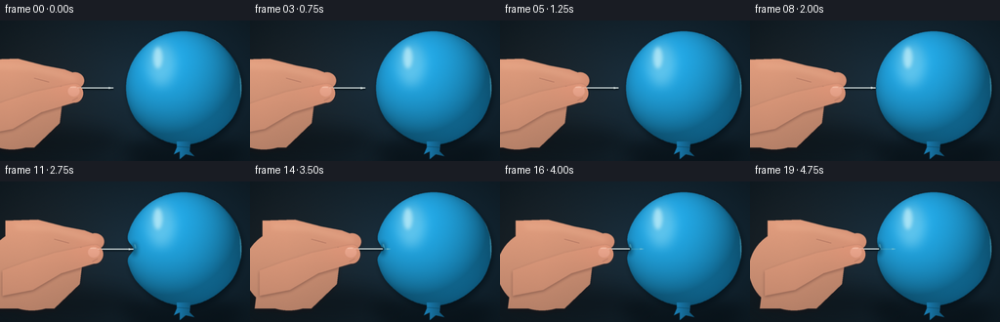
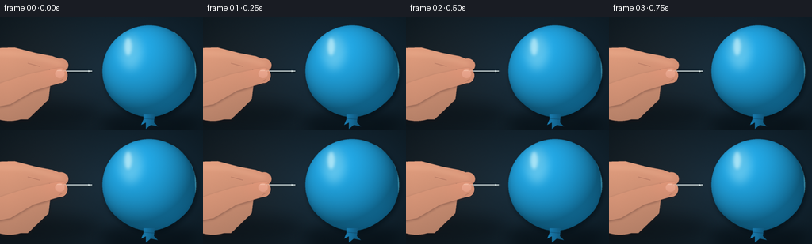

CODING AGENTS AS PIXEL WORLD MODELS
traex/GPT-5.6-Sol · phygen_021
点击播放 · 原生 RGB 像素
逐轮保存的候选
回放视频、检查图与代码变化。
每份候选均可单独播放。实际图片检查记录在下方工具轨迹中。
候选 01播放与检查图
点击播放 · 原生 RGB 像素


展开代码变化
--- 上一保存版本
+++ 本次保存版本
@@ -0,0 +1,306 @@
+from pathlib import Path
+import math
+import numpy as np
+from PIL import Image, ImageDraw, ImageFilter
+import artifact_io
+
+# Procedural macro studio scene. Everything is drawn at 4x resolution and
+# downsampled so the very thin needle and latex edge remain clean.
+W, H, N, S = 256, 144, 20, 4
+WW, HH = W*S, H*S
+rng = np.random.default_rng(21021)
+
+
+def sc(v):
+ return int(round(v*S))
+
+
+def mask_image():
+ return Image.new("L", (WW, HH), 0)
+
+
+def put(canvas, rgb, mask):
+ """Alpha-composite a (possibly spatially varying) RGB layer."""
+ if not isinstance(rgb, np.ndarray):
+ layer = Image.new("RGB", (WW, HH), tuple(int(c) for c in rgb))
+ else:
+ layer = Image.fromarray(np.clip(rgb, 0, 255).astype(np.uint8), "RGB")
+ canvas.paste(layer, (0, 0), mask)
+
+
+def ellipse_mask(box, blur=0):
+ m = mask_image()
+ ImageDraw.Draw(m).ellipse(tuple(sc(x) for x in box), fill=255)
+ if blur:
+ m = m.filter(ImageFilter.GaussianBlur(sc(blur)))
+ return m
+
+
+def polygon_mask(points, blur=0):
+ m = mask_image()
+ ImageDraw.Draw(m).polygon([(sc(x), sc(y)) for x, y in points], fill=255)
+ if blur:
+ m = m.filter(ImageFilter.GaussianBlur(sc(blur)))
+ return m
+
+
+def line_mask(points, width, fill=255, blur=0, joint="curve"):
+ m = mask_image()
+ d = ImageDraw.Draw(m)
+ d.line([(sc(x), sc(y)) for x, y in points], fill=fill, width=max(1, sc(width)), joint=joint)
+ if blur:
+ m = m.filter(ImageFilter.GaussianBlur(sc(blur)))
+ return m
+
+
+def smoothstep(a, b, x):
+ if a == b:
+ return float(x >= b)
+ t = np.clip((x-a)/(b-a), 0, 1)
+ return t*t*(3-2*t)
+
+# Fixed high resolution coordinate fields and film grain.
+yy, xx = np.mgrid[0:HH, 0:WW].astype(np.float32)
+x = xx / S
+y = yy / S
+static_grain = rng.normal(0, 1.0, (HH, WW)).astype(np.float32)
+
+# Dark, softly lit studio background with a tabletop-like pool of light.
+rad = np.sqrt(((x-139)/175)**2 + ((y-66)/115)**2)
+bg = np.empty((HH, WW, 3), np.float32)
+bg[..., 0] = 12 + 13*(1-np.clip(rad, 0, 1))
+bg[..., 1] = 23 + 20*(1-np.clip(rad, 0, 1))
+bg[..., 2] = 30 + 25*(1-np.clip(rad, 0, 1))
+# subdued warm glow behind the hand, cyan glow behind the balloon
+warm = np.exp(-(((x-35)/75)**2 + ((y-72)/70)**2))
+cool = np.exp(-(((x-196)/95)**2 + ((y-68)/72)**2))
+bg[..., 0] += 8*warm
+bg[..., 1] += 3*warm + 5*cool
+bg[..., 2] += 9*cool
+bg += static_grain[..., None]*0.55
+bg = np.clip(bg, 0, 255).astype(np.uint8)
+
+frames = []
+for fi in range(N):
+ t = fi/(N-1)
+ q = 0.5 - 0.5*math.cos(math.pi*t) # deliberate slow push, eased at both ends
+ tip_x = 116.0 + 33.0*q
+ hand_shift = tip_x - 116.0
+ needle_y = 69.0 + 0.20*math.sin(fi*0.72) * math.sin(math.pi*t)
+ grip_x = tip_x - 44.0
+
+ # Latex dimples deeply before puncture, then relaxes around the shaft.
+ if q < 0.39:
+ indent = 0.0
+ elif q < 0.70:
+ indent = 9.1*smoothstep(0.39, 0.70, q)
+ else:
+ indent = 9.1 - 6.7*smoothstep(0.70, 1.0, q)
+ punct = smoothstep(0.69, 0.78, q)
+
+ canvas = Image.fromarray(bg.copy(), "RGB")
+
+ # Grounding shadows: balloon and hand float in a close-up studio setup.
+ sh = ellipse_mask((124, 120, 253, 148), blur=7)
+ put(canvas, (2, 8, 12), sh.point(lambda a: int(a*0.48)))
+ hsh = ellipse_mask((-28+hand_shift, 107, 126+hand_shift, 140), blur=8)
+ put(canvas, (3, 7, 10), hsh.point(lambda a: int(a*0.35)))
+
+ # Rear hand silhouette: palm plus index finger, subtly warm modeled skin.
+ palm = ellipse_mask((-34+hand_shift, 48, 58+hand_shift, 132))
+ palm_poly = polygon_mask([
+ (-12+hand_shift, 42), (22+hand_shift, 41), (50+hand_shift, 52),
+ (65+hand_shift, 72), (61+hand_shift, 105), (35+hand_shift, 130),
+ (-23+hand_shift, 130)
+ ])
+ # Union masks
+ palm = Image.fromarray(np.maximum(np.array(palm), np.array(palm_poly)).astype(np.uint8))
+ index_pts = [
+ (-15+hand_shift, 40), (18+hand_shift, 39), (45+hand_shift, 46),
+ (grip_x-6, 50), (grip_x+7, 55), (grip_x+12, 61),
+ (grip_x+11, 66), (grip_x+6, 70), (grip_x-2, 69),
+ (42+hand_shift, 63), (14+hand_shift, 61), (-15+hand_shift, 62)
+ ]
+ index = polygon_mask(index_pts)
+ index_round = ellipse_mask((grip_x-5, 53, grip_x+14, 70))
+ hand_rear = np.maximum.reduce([np.array(palm), np.array(index), np.array(index_round)])
+ hand_rear = Image.fromarray(hand_rear.astype(np.uint8)).filter(ImageFilter.GaussianBlur(sc(0.22)))
+
+ # Skin illumination from upper left, with soft subsurface warmth at edges.
+ hsx = x - hand_shift
+ skin = np.empty((HH, WW, 3), np.float32)
+ light = 1.0 - 0.22*np.clip((y-42)/95, 0, 1) - 0.08*np.clip((hsx-10)/100, 0, 1)
+ blush = np.exp(-(((hsx-grip_x+hand_shift-3)/24)**2 + ((y-66)/22)**2))
+ skin[..., 0] = 205*light + 20 + 10*blush
+ skin[..., 1] = 135*light + 22 + 2*blush
+ skin[..., 2] = 104*light + 22 + 2*blush
+ skin += static_grain[..., None]*0.75
+ # dark soft contour under hand
+ hand_shadow = hand_rear.filter(ImageFilter.GaussianBlur(sc(2.2)))
+ shifted_shadow = Image.new("L", (WW, HH), 0)
+ shifted_shadow.paste(hand_shadow, (0, sc(2)))
+ put(canvas, (29, 18, 20), shifted_shadow.point(lambda a: int(a*0.48)))
+ put(canvas, skin, hand_rear)
+
+ # Index-finger highlight and crease details establish a convincing grip.
+ ih = line_mask([(-5+hand_shift, 46), (33+hand_shift, 48), (grip_x+6, 60)], 4.5, blur=2.4)
+ ih = Image.fromarray(np.minimum(np.array(ih), np.array(index)).astype(np.uint8))
+ put(canvas, (255, 202, 168), ih.point(lambda a: int(a*0.24)))
+ crease = line_mask([(35+hand_shift, 59), (50+hand_shift, 63)], 0.7, fill=115, blur=.15)
+ put(canvas, (112, 60, 55), crease)
+
+ # Balloon body polygon. The left perimeter locally folds inward under the point.
+ cx, cy, rx, ry = 188.0, 69.0, 59.0, 58.0
+ pts = []
+ for k in range(480):
+ a = 2*math.pi*k/480
+ px = cx + rx*math.cos(a)
+ py = cy + ry*math.sin(a)
+ # Only the needle-facing (left) half is deformed.
+ if math.cos(a) < 0:
+ px += indent*math.exp(-0.5*((py-needle_y)/5.0)**2)
+ # slight pear-shaped taper at the bottom
+ if py > 101:
+ px = cx + (px-cx)*(1.0 - 0.08*(py-101)/26)
+ pts.append((px, py))
+ balloon = polygon_mask(pts, blur=.16)
+
+ # Blue latex modeled approximately as a glossy sphere.
+ nx = (x-cx)/rx
+ ny = (y-cy)/ry
+ rr = np.clip(nx*nx + ny*ny, 0, 1)
+ nz = np.sqrt(np.maximum(0, 1-rr))
+ # diffuse studio light from upper left and stronger edge falloff
+ diff = np.clip(-0.45*nx - 0.62*ny + 0.75*nz, 0, 1)
+ edge = nz
+ latex = np.empty((HH, WW, 3), np.float32)
+ latex[..., 0] = 12 + 19*diff + 5*edge
+ latex[..., 1] = 75 + 76*diff + 22*edge
+ latex[..., 2] = 105 + 103*diff + 27*edge
+ # rich lower-right reflected blue and fine latex grain
+ lower_ref = np.exp(-(((x-218)/44)**2 + ((y-106)/38)**2))
+ latex[..., 1] += 9*lower_ref
+ latex[..., 2] += 15*lower_ref
+ latex += static_grain[..., None]*0.65
+
+ # A soft offset shadow first makes the inflated round body dimensional.
+ bshadow = balloon.filter(ImageFilter.GaussianBlur(sc(3.0)))
+ offset = Image.new("L", (WW, HH), 0)
+ offset.paste(bshadow, (sc(2), sc(3)))
+ put(canvas, (2, 12, 18), offset.point(lambda a: int(a*.67)))
+ put(canvas, latex, balloon)
+
+ # Glossy window reflection and narrow rim lights on taut latex.
+ shine = ellipse_mask((151, 23, 179, 67), blur=5.2)
+ shine = Image.fromarray(np.minimum(np.array(shine), np.array(balloon)).astype(np.uint8))
+ put(canvas, (201, 242, 245), shine.point(lambda a: int(a*.35)))
+ shine2 = ellipse_mask((157, 27, 166, 49), blur=1.7)
+ shine2 = Image.fromarray(np.minimum(np.array(shine2), np.array(balloon)).astype(np.uint8))
+ put(canvas, (230, 255, 255), shine2.point(lambda a: int(a*.54)))
+ rim = line_mask([(218, 18), (237, 31), (246, 54), (247, 82)], 1.1, fill=150, blur=.5)
+ rim = Image.fromarray(np.minimum(np.array(rim), np.array(balloon)).astype(np.uint8))
+ put(canvas, (120, 220, 239), rim)
+
+ # Neck and tied knot make the object unmistakably a fully inflated balloon.
+ neck_pts = [(181,124), (195,124), (194,134), (199,139), (190,137),
+ (184,142), (184,134), (178,137), (181,130)]
+ neck = polygon_mask(neck_pts, blur=.2)
+ neck_col = np.empty((HH, WW, 3), np.float32)
+ neck_col[..., 0] = 17 + 8*np.clip((195-x)/16,0,1)
+ neck_col[..., 1] = 89 + 38*np.clip((195-x)/16,0,1)
+ neck_col[..., 2] = 126 + 55*np.clip((195-x)/16,0,1)
+ put(canvas, neck_col, neck)
+ knot_line = line_mask([(181,129),(194,130)], .7, fill=150, blur=.15)
+ put(canvas, (7, 48, 70), knot_line)
+
+ # Surface indentation shading, visible before and during penetration.
+ contact_amt = smoothstep(.35, .67, q)
+ if contact_amt > 0:
+ entry_x = cx - rx*math.sqrt(max(0, 1-((needle_y-cy)/ry)**2)) + indent
+ fold_dark = ellipse_mask((entry_x-2.8, needle_y-7.2, entry_x+4.0, needle_y+7.2), blur=2.0)
+ fold_dark = Image.fromarray(np.minimum(np.array(fold_dark), np.array(balloon)).astype(np.uint8))
+ put(canvas, (3, 42, 62), fold_dark.point(lambda a: int(a*.48*contact_amt)))
+ fold_hi = line_mask([(entry_x+1.0,needle_y-4.7),(entry_x+2.0,needle_y-1.0)], .85, fill=190, blur=.5)
+ put(canvas, (142, 226, 234), fold_hi.point(lambda a: int(a*contact_amt)))
+ else:
+ entry_x = cx - rx*math.sqrt(max(0, 1-((needle_y-cy)/ry)**2))
+
+ # The penetrated portion is visible only as a faint refracted line through latex.
+ if punct > 0:
+ inner_end = max(entry_x, tip_x-0.4)
+ inner = line_mask([(entry_x+0.3, needle_y), (inner_end, needle_y)], 1.10, fill=180, blur=.28)
+ inner = Image.fromarray(np.minimum(np.array(inner), np.array(balloon)).astype(np.uint8))
+ put(canvas, (116, 191, 201), inner.point(lambda a: int(a*(0.33+0.18*punct))))
+ # dark pinhole/slit closes tightly around the shaft
+ hole = ellipse_mask((entry_x-1.1, needle_y-1.75, entry_x+1.8, needle_y+1.75), blur=.28)
+ put(canvas, (2, 31, 42), hole.point(lambda a: int(a*.78*punct)))
+
+ # Metallic needle: dark contact shadow, cool body, bright upper glint.
+ # Before contact it runs to its moving tip; afterwards the visible exterior ends at skin.
+ visible_end = min(tip_x, entry_x+0.7)
+ needle_start = grip_x-3.5
+ nd_shadow = line_mask([(needle_start, needle_y+1.0), (visible_end, needle_y+1.0)], 2.1, fill=135, blur=.7)
+ put(canvas, (0, 8, 11), nd_shadow)
+ body = line_mask([(needle_start, needle_y), (visible_end, needle_y)], 1.35, fill=255, blur=.08)
+ put(canvas, (162, 177, 180), body)
+ glint = line_mask([(needle_start+1, needle_y-.35), (visible_end-.5, needle_y-.35)], .42, fill=235, blur=.10)
+ put(canvas, (244, 253, 252), glint)
+ # Sharp triangular point while free, and a subtly visible point after entry.
+ if tip_x <= entry_x + .5:
+ tri = polygon_mask([(tip_x-4.7,needle_y-1.05),(tip_x,needle_y),(tip_x-4.7,needle_y+1.05)])
+ put(canvas, (205, 219, 219), tri)
+ elif punct > 0:
+ tiptri = polygon_mask([(tip_x-3.8,needle_y-.75),(tip_x,needle_y),(tip_x-3.8,needle_y+.75)], blur=.15)
+ tiptri = Image.fromarray(np.minimum(np.array(tiptri), np.array(balloon)).astype(np.uint8))
+ put(canvas, (151, 207, 211), tiptri.point(lambda a: int(a*.55*punct)))
+
+ # Needle's eye at the rear, partly nestled in the pinch.
+ eye_outer = ellipse_mask((needle_start-3.2, needle_y-1.55, needle_start+1.2, needle_y+1.55))
+ put(canvas, (170, 184, 184), eye_outer)
+ eye_inner = ellipse_mask((needle_start-2.05, needle_y-.58, needle_start-.15, needle_y+.58))
+ put(canvas, (38, 44, 45), eye_inner)
+
+ # Foreground thumb wraps over the needle at the eye.
+ thumb_pts = [
+ (-18+hand_shift, 91), (7+hand_shift, 82), (35+hand_shift, 73),
+ (grip_x-8, 67), (grip_x+2, 65), (grip_x+9, 68),
+ (grip_x+12, 74), (grip_x+10, 80), (grip_x+4, 84),
+ (42+hand_shift, 94), (13+hand_shift, 111), (-18+hand_shift, 117)
+ ]
+ thumb = polygon_mask(thumb_pts, blur=.18)
+ thumb_tip = ellipse_mask((grip_x-4, 65, grip_x+13, 84))
+ thumb = Image.fromarray(np.maximum(np.array(thumb), np.array(thumb_tip)).astype(np.uint8))
+ thumb_sh = thumb.filter(ImageFilter.GaussianBlur(sc(1.5)))
+ tshift = Image.new("L", (WW,HH), 0); tshift.paste(thumb_sh,(0,sc(1.3)))
+ put(canvas, (59, 31, 31), tshift.point(lambda a:int(a*.38)))
+ # slightly brighter thumb than rear palm
+ thumb_skin = skin.copy()
+ thumb_skin[...,0] += 8; thumb_skin[...,1] += 4; thumb_skin[...,2] += 3
+ put(canvas, thumb_skin, thumb)
+
+ # Thumbnail and compression crease at the precise pinch point.
+ nail = ellipse_mask((grip_x-2.5, 67.0, grip_x+9.2, 77.8), blur=.22)
+ nail = Image.fromarray(np.minimum(np.array(nail), np.array(thumb)).astype(np.uint8))
+ nail_col = np.zeros((HH,WW,3),np.float32)
+ nail_col[...,0] = 239 - 10*np.clip((y-67)/11,0,1)
+ nail_col[...,1] = 174 - 13*np.clip((y-67)/11,0,1)
+ nail_col[...,2] = 150 - 12*np.clip((y-67)/11,0,1)
+ put(canvas, nail_col, nail.point(lambda a:int(a*.76)))
+ nail_gl = line_mask([(grip_x,68.5),(grip_x+5.4,68.2)], .65, fill=180, blur=.35)
+ put(canvas, (255,226,205), nail_gl)
+ pinch_crease = line_mask([(grip_x+7.5,79),(grip_x+2,82)], .7, fill=100, blur=.2)
+ put(canvas, (119,65,61), pinch_crease)
+
+ # A final tiny specular segment emerging from between the fingers.
+ exposed_start = grip_x+7.5
+ if visible_end > exposed_start:
+ topglint = line_mask([(exposed_start, needle_y-.25),(visible_end,needle_y-.25)], .34, fill=240, blur=.06)
+ put(canvas, (250,255,253), topglint)
+
+ # Downsample using a high-quality reconstruction filter.
+ frame = canvas.resize((W,H), Image.Resampling.LANCZOS)
+ frames.append(np.asarray(frame, dtype=np.uint8))
+
+frames = np.stack(frames, axis=0)
+assert frames.shape == (20, 144, 256, 3) and frames.dtype == np.uint8
+artifact_io.save(frames, Path(__file__).resolve().parent)
可观测工具轨迹
实际执行的命令与返回图片。
命令 1exit 0
/bin/bash -lc "cat prompt.txt && printf '\\n--- RULES ---\\n' && cat GENERATION_RULES.md && printf '\\n--- SPEC ---\\n' && cat task_spec.json"
命令 2exit 0
/bin/bash -lc "find . -maxdepth 2 -type f -printf '%p %s bytes\\n' | sort && printf '\\nTOOLS\\n' && command -v ffmpeg || true && command -v blender || true && command -v python3 || true"
命令 3exit 0
/bin/bash -lc 'cat artifact_io.py'
命令 4exit 0
/bin/bash -lc "cat > generate.py <<'PY'
from pathlib import Path
import math
import numpy as np
from PIL import Image, ImageDraw, ImageFilter
import artifact_io
# Procedural macro studio scene. Everything is drawn at 4x resolution and
# downsampled so the very thin needle and latex edge remain clean.
W, H, N, S = 256, 144, 20, 4
WW, HH = W*S, H*S
rng = np.random.default_rng(21021)
def sc(v):
return int(round(v*S))
def mask_image():
return Image.new(\"L\", (WW, HH), 0)
def put(canvas, rgb, mask):
\"\"\"Alpha-composite a (possibly spatially varying) RGB layer.\"\"\"
if not isinstance(rgb, np.ndarray):
layer = Image.new(\"RGB\", (WW, HH), tuple(int(c) for c in rgb))
else:
layer = Image.fromarray(np.clip(rgb, 0, 255).astype(np.uint8), \"RGB\")
canvas.paste(layer, (0, 0), mask)
def ellipse_mask(box, blur=0):
m = mask_image()
ImageDraw.Draw(m).ellipse(tuple(sc(x) for x in box), fill=255)
if blur:
m = m.filter(ImageFilter.GaussianBlur(sc(blur)))
return m
def polygon_mask(points, blur=0):
m = mask_image()
ImageDraw.Draw(m).polygon([(sc(x), sc(y)) for x, y in points], fill=255)
if blur:
m = m.filter(ImageFilter.GaussianBlur(sc(blur)))
return m
def line_mask(points, width, fill=255, blur=0, joint=\"curve\"):
m = mask_image()
d = ImageDraw.Draw(m)
d.line([(sc(x), sc(y)) for x, y in points], fill=fill, width=max(1, sc(width)), joint=joint)
if blur:
m = m.filter(ImageFilter.GaussianBlur(sc(blur)))
return m
def smoothstep(a, b, x):
if a == b:
return float(x >= b)
t = np.clip((x-a)/(b-a), 0, 1)
return t*t*(3-2*t)
# Fixed high resolution coordinate fields and film grain.
yy, xx = np.mgrid[0:HH, 0:WW].astype(np.float32)
x = xx / S
y = yy / S
static_grain = rng.normal(0, 1.0, (HH, WW)).astype(np.float32)
# Dark, softly lit studio background with a tabletop-like pool of light.
rad = np.sqrt(((x-139)/175)**2 + ((y-66)/115)**2)
bg = np.empty((HH, WW, 3), np.float32)
bg[..., 0] = 12 + 13*(1-np.clip(rad, 0, 1))
bg[..., 1] = 23 + 20*(1-np.clip(rad, 0, 1))
bg[..., 2] = 30 + 25*(1-np.clip(rad, 0, 1))
# subdued warm glow behind the hand, cyan glow behind the balloon
warm = np.exp(-(((x-35)/75)**2 + ((y-72)/70)**2))
cool = np.exp(-(((x-196)/95)**2 + ((y-68)/72)**2))
bg[..., 0] += 8*warm
bg[..., 1] += 3*warm + 5*cool
bg[..., 2] += 9*cool
bg += static_grain[..., None]*0.55
bg = np.clip(bg, 0, 255).astype(np.uint8)
frames = []
for fi in range(N):
t = fi/(N-1)
q = 0.5 - 0.5*math.cos(math.pi*t) # deliberate slow push, eased at both ends
tip_x = 116.0 + 33.0*q
hand_shift = tip_x - 116.0
needle_y = 69.0 + 0.20*math.sin(fi*0.72) * math.sin(math.pi*t)
grip_x = tip_x - 44.0
# Latex dimples deeply before puncture, then relaxes around the shaft.
if q < 0.39:
indent = 0.0
elif q < 0.70:
indent = 9.1*smoothstep(0.39, 0.70, q)
else:
indent = 9.1 - 6.7*smoothstep(0.70, 1.0, q)
punct = smoothstep(0.69, 0.78, q)
canvas = Image.fromarray(bg.copy(), \"RGB\")
# Grounding shadows: balloon and hand float in a close-up studio setup.
sh = ellipse_mask((124, 120, 253, 148), blur=7)
put(canvas, (2, 8, 12), sh.point(lambda a: int(a*0.48)))
hsh = ellipse_mask((-28+hand_shift, 107, 126+hand_shift, 140), blur=8)
put(canvas, (3, 7, 10), hsh.point(lambda a: int(a*0.35)))
# Rear hand silhouette: palm plus index finger, subtly warm modeled skin.
palm = ellipse_mask((-34+hand_shift, 48, 58+hand_shift, 132))
palm_poly = polygon_mask([
(-12+hand_shift, 42), (22+hand_shift, 41), (50+hand_shift, 52),
(65+hand_shift, 72), (61+hand_shift, 105), (35+hand_shift, 130),
(-23+hand_shift, 130)
])
# Union masks
palm = Image.fromarray(np.maximum(np.array(palm), np.array(palm_poly)).astype(np.uint8))
index_pts = [
(-15+hand_shift, 40), (18+hand_shift, 39), (45+hand_shift, 46),
(grip_x-6, 50), (grip_x+7, 55), (grip_x+12, 61),
(grip_x+11, 66), (grip_x+6, 70), (grip_x-2, 69),
(42+hand_shift, 63), (14+hand_shift, 61), (-15+hand_shift, 62)
]
index = polygon_mask(index_pts)
index_round = ellipse_mask((grip_x-5, 53, grip_x+14, 70))
hand_rear = np.maximum.reduce([np.array(palm), np.array(index), np.array(index_round)])
hand_rear = Image.fromarray(hand_rear.astype(np.uint8)).filter(ImageFilter.GaussianBlur(sc(0.22)))
# Skin illumination from upper left, with soft subsurface warmth at edges.
hsx = x - hand_shift
skin = np.empty((HH, WW, 3), np.float32)
light = 1.0 - 0.22*np.clip((y-42)/95, 0, 1) - 0.08*np.clip((hsx-10)/100, 0, 1)
blush = np.exp(-(((hsx-grip_x+hand_shift-3)/24)**2 + ((y-66)/22)**2))
skin[..., 0] = 205*light + 20 + 10*blush
skin[..., 1] = 135*light + 22 + 2*blush
skin[..., 2] = 104*light + 22 + 2*blush
skin += static_grain[..., None]*0.75
# dark soft contour under hand
hand_shadow = hand_rear.filter(ImageFilter.GaussianBlur(sc(2.2)))
shifted_shadow = Image.new(\"L\", (WW, HH), 0)
shifted_shadow.paste(hand_shadow, (0, sc(2)))
put(canvas, (29, 18, 20), shifted_shadow.point(lambda a: int(a*0.48)))
put(canvas, skin, hand_rear)
# Index-finger highlight and crease details establish a convincing grip.
ih = line_mask([(-5+hand_shift, 46), (33+hand_shift, 48), (grip_x+6, 60)], 4.5, blur=2.4)
ih = Image.fromarray(np.minimum(np.array(ih), np.array(index)).astype(np.uint8))
put(canvas, (255, 202, 168), ih.point(lambda a: int(a*0.24)))
crease = line_mask([(35+hand_shift, 59), (50+hand_shift, 63)], 0.7, fill=115, blur=.15)
put(canvas, (112, 60, 55), crease)
# Balloon body polygon. The left perimeter locally folds inward under the point.
cx, cy, rx, ry = 188.0, 69.0, 59.0, 58.0
pts = []
for k in range(480):
a = 2*math.pi*k/480
px = cx + rx*math.cos(a)
py = cy + ry*math.sin(a)
# Only the needle-facing (left) half is deformed.
if math.cos(a) < 0:
px += indent*math.exp(-0.5*((py-needle_y)/5.0)**2)
# slight pear-shaped taper at the bottom
if py > 101:
px = cx + (px-cx)*(1.0 - 0.08*(py-101)/26)
pts.append((px, py))
balloon = polygon_mask(pts, blur=.16)
# Blue latex modeled approximately as a glossy sphere.
nx = (x-cx)/rx
ny = (y-cy)/ry
rr = np.clip(nx*nx + ny*ny, 0, 1)
nz = np.sqrt(np.maximum(0, 1-rr))
# diffuse studio light from upper left and stronger edge falloff
diff = np.clip(-0.45*nx - 0.62*ny + 0.75*nz, 0, 1)
edge = nz
latex = np.empty((HH, WW, 3), np.float32)
latex[..., 0] = 12 + 19*diff + 5*edge
latex[..., 1] = 75 + 76*diff + 22*edge
latex[..., 2] = 105 + 103*diff + 27*edge
# rich lower-right reflected blue and fine latex grain
lower_ref = np.exp(-(((x-218)/44)**2 + ((y-106)/38)**2))
latex[..., 1] += 9*lower_ref
latex[..., 2] += 15*lower_ref
latex += static_grain[..., None]*0.65
# A soft offset shadow first makes the inflated round body dimensional.
bshadow = balloon.filter(ImageFilter.GaussianBlur(sc(3.0)))
offset = Image.new(\"L\", (WW, HH), 0)
offset.paste(bshadow, (sc(2), sc(3)))
put(canvas, (2, 12, 18), offset.point(lambda a: int(a*.67)))
put(canvas, latex, balloon)
# Glossy window reflection and narrow rim lights on taut latex.
shine = ellipse_mask((151, 23, 179, 67), blur=5.2)
shine = Image.fromarray(np.minimum(np.array(shine), np.array(balloon)).astype(np.uint8))
put(canvas, (201, 242, 245), shine.point(lambda a: int(a*.35)))
shine2 = ellipse_mask((157, 27, 166, 49), blur=1.7)
shine2 = Image.fromarray(np.minimum(np.array(shine2), np.array(balloon)).astype(np.uint8))
put(canvas, (230, 255, 255), shine2.point(lambda a: int(a*.54)))
rim = line_mask([(218, 18), (237, 31), (246, 54), (247, 82)], 1.1, fill=150, blur=.5)
rim = Image.fromarray(np.minimum(np.array(rim), np.array(balloon)).astype(np.uint8))
put(canvas, (120, 220, 239), rim)
# Neck and tied knot make the object unmistakably a fully inflated balloon.
neck_pts = [(181,124), (195,124), (194,134), (199,139), (190,137),
(184,142), (184,134), (178,137), (181,130)]
neck = polygon_mask(neck_pts, blur=.2)
neck_col = np.empty((HH, WW, 3), np.float32)
neck_col[..., 0] = 17 + 8*np.clip((195-x)/16,0,1)
neck_col[..., 1] = 89 + 38*np.clip((195-x)/16,0,1)
neck_col[..., 2] = 126 + 55*np.clip((195-x)/16,0,1)
put(canvas, neck_col, neck)
knot_line = line_mask([(181,129),(194,130)], .7, fill=150, blur=.15)
put(canvas, (7, 48, 70), knot_line)
# Surface indentation shading, visible before and during penetration.
contact_amt = smoothstep(.35, .67, q)
if contact_amt > 0:
entry_x = cx - rx*math.sqrt(max(0, 1-((needle_y-cy)/ry)**2)) + indent
fold_dark = ellipse_mask((entry_x-2.8, needle_y-7.2, entry_x+4.0, needle_y+7.2), blur=2.0)
fold_dark = Image.fromarray(np.minimum(np.array(fold_dark), np.array(balloon)).astype(np.uint8))
put(canvas, (3, 42, 62), fold_dark.point(lambda a: int(a*.48*contact_amt)))
fold_hi = line_mask([(entry_x+1.0,needle_y-4.7),(entry_x+2.0,needle_y-1.0)], .85, fill=190, blur=.5)
put(canvas, (142, 226, 234), fold_hi.point(lambda a: int(a*contact_amt)))
else:
entry_x = cx - rx*math.sqrt(max(0, 1-((needle_y-cy)/ry)**2))
# The penetrated portion is visible only as a faint refracted line through latex.
if punct > 0:
inner_end = max(entry_x, tip_x-0.4)
inner = line_mask([(entry_x+0.3, needle_y), (inner_end, needle_y)], 1.10, fill=180, blur=.28)
inner = Image.fromarray(np.minimum(np.array(inner), np.array(balloon)).astype(np.uint8))
put(canvas, (116, 191, 201), inner.point(lambda a: int(a*(0.33+0.18*punct))))
# dark pinhole/slit closes tightly around the shaft
hole = ellipse_mask((entry_x-1.1, needle_y-1.75, entry_x+1.8, needle_y+1.75), blur=.28)
put(canvas, (2, 31, 42), hole.point(lambda a: int(a*.78*punct)))
# Metallic needle: dark contact shadow, cool body, bright upper glint.
# Before contact it runs to its moving tip; afterwards the visible exterior ends at skin.
visible_end = min(tip_x, entry_x+0.7)
needle_start = grip_x-3.5
nd_shadow = line_mask([(needle_start, needle_y+1.0), (visible_end, needle_y+1.0)], 2.1, fill=135, blur=.7)
put(canvas, (0, 8, 11), nd_shadow)
body = line_mask([(needle_start, needle_y), (visible_end, needle_y)], 1.35, fill=255, blur=.08)
put(canvas, (162, 177, 180), body)
glint = line_mask([(needle_start+1, needle_y-.35), (visible_end-.5, needle_y-.35)], .42, fill=235, blur=.10)
put(canvas, (244, 253, 252), glint)
# Sharp triangular point while free, and a subtly visible point after entry.
if tip_x <= entry_x + .5:
tri = polygon_mask([(tip_x-4.7,needle_y-1.05),(tip_x,needle_y),(tip_x-4.7,needle_y+1.05)])
put(canvas, (205, 219, 219), tri)
elif punct > 0:
tiptri = polygon_mask([(tip_x-3.8,needle_y-.75),(tip_x,needle_y),(tip_x-3.8,needle_y+.75)], blur=.15)
tiptri = Image.fromarray(np.minimum(np.array(tiptri), np.array(balloon)).astype(np.uint8))
put(canvas, (151, 207, 211), tiptri.point(lambda a: int(a*.55*punct)))
# Needle's eye at the rear, partly nestled in the pinch.
eye_outer = ellipse_mask((needle_start-3.2, needle_y-1.55, needle_start+1.2, needle_y+1.55))
put(canvas, (170, 184, 184), eye_outer)
eye_inner = ellipse_mask((needle_start-2.05, needle_y-.58, needle_start-.15, needle_y+.58))
put(canvas, (38, 44, 45), eye_inner)
# Foreground thumb wraps over the needle at the eye.
thumb_pts = [
(-18+hand_shift, 91), (7+hand_shift, 82), (35+hand_shift, 73),
(grip_x-8, 67), (grip_x+2, 65), (grip_x+9, 68),
(grip_x+12, 74), (grip_x+10, 80), (grip_x+4, 84),
(42+hand_shift, 94), (13+hand_shift, 111), (-18+hand_shift, 117)
]
thumb = polygon_mask(thumb_pts, blur=.18)
thumb_tip = ellipse_mask((grip_x-4, 65, grip_x+13, 84))
thumb = Image.fromarray(np.maximum(np.array(thumb), np.array(thumb_tip)).astype(np.uint8))
thumb_sh = thumb.filter(ImageFilter.GaussianBlur(sc(1.5)))
tshift = Image.new(\"L\", (WW,HH), 0); tshift.paste(thumb_sh,(0,sc(1.3)))
put(canvas, (59, 31, 31), tshift.point(lambda a:int(a*.38)))
# slightly brighter thumb than rear palm
thumb_skin = skin.copy()
thumb_skin[...,0] += 8; thumb_skin[...,1] += 4; thumb_skin[...,2] += 3
put(canvas, thumb_skin, thumb)
# Thumbnail and compression crease at the precise pinch point.
nail = ellipse_mask((grip_x-2.5, 67.0, grip_x+9.2, 77.8), blur=.22)
nail = Image.fromarray(np.minimum(np.array(nail), np.array(thumb)).astype(np.uint8))
nail_col = np.zeros((HH,WW,3),np.float32)
nail_col[...,0] = 239 - 10*np.clip((y-67)/11,0,1)
nail_col[...,1] = 174 - 13*np.clip((y-67)/11,0,1)
nail_col[...,2] = 150 - 12*np.clip((y-67)/11,0,1)
put(canvas, nail_col, nail.point(lambda a:int(a*.76)))
nail_gl = line_mask([(grip_x,68.5),(grip_x+5.4,68.2)], .65, fill=180, blur=.35)
put(canvas, (255,226,205), nail_gl)
pinch_crease = line_mask([(grip_x+7.5,79),(grip_x+2,82)], .7, fill=100, blur=.2)
put(canvas, (119,65,61), pinch_crease)
# A final tiny specular segment emerging from between the fingers.
exposed_start = grip_x+7.5
if visible_end > exposed_start:
topglint = line_mask([(exposed_start, needle_y-.25),(visible_end,needle_y-.25)], .34, fill=240, blur=.06)
put(canvas, (250,255,253), topglint)
# Downsample using a high-quality reconstruction filter.
frame = canvas.resize((W,H), Image.Resampling.LANCZOS)
frames.append(np.asarray(frame, dtype=np.uint8))
frames = np.stack(frames, axis=0)
assert frames.shape == (20, 144, 256, 3) and frames.dtype == np.uint8
artifact_io.save(frames, Path(__file__).resolve().parent)
PY
python3 generate.py
ls -lh pixels.npz inspection.png index.html frames/00.png frames/19.png"命令 5exit 1
/bin/bash -lc "python3 - <<'PY'
import numpy as np
from PIL import Image
z=np.load('pixels.npz')['pixels']
assert z.shape==(144,256,20) and z.dtype==np.uint32
f=np.stack([((z[:,:,i,None] >> np.array([16,8,0])) & 255).astype(np.uint8) for i in range(20)])
print('decoded',f.shape,f.dtype,'range',f.min(),f.max())
print('mean RGB',f.mean((0,1,2)).round(2).tolist())
print('mean absolute frame deltas:', [round(float(np.abs(f[i].astype(int)-f[i-1].astype(int)).mean()),2) for i in range(1,20)])
print('all frames unique:',len({x.tobytes() for x in f})==20)
for i in [0,7,13,19]:
im=np.array(Image.open(f'frames/{i:02d}.png'))
print(i,'saved frame matches:',np.array_equal(im,f[i]), 'non-dark pixels:', int((im.max(2)>80).sum()))
PY
python3 generate.py >/tmp/regenerate.log 2>&1 && sha256sum pixels.npz frames/00.png frames/19.png generate.py && cat /tmp/regenerate.log"命令 6exit 0
/bin/bash -lc "sha256sum pixels.npz > .tmp/hash.before
python3 generate.py > .tmp/regenerate.log 2>&1
sha256sum pixels.npz > .tmp/hash.after
cat .tmp/hash.before .tmp/hash.after
cmp -s .tmp/hash.before .tmp/hash.after && echo 'deterministic regeneration: yes'
cat .tmp/regenerate.log
python3 - <<'PY'
from PIL import Image
import numpy as np
im=np.array(Image.open('inspection.png'))
print('inspection',im.shape,im.dtype)
# detect intended needle/balloon horizontal relation from final frame by fixed geometry
print('outputs complete:', all(__import__('pathlib').Path(f'frames/{i:02d}.png').is_file() for i in range(20)))
PY"保存候选 1 份；完成命令 6 次；可验证图片返回 0 张。原始 API 响应与完整日志保留在本地。